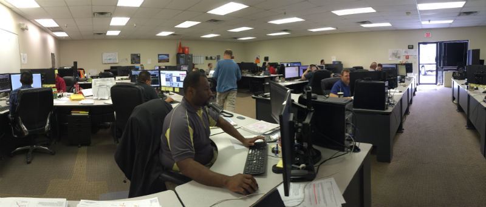
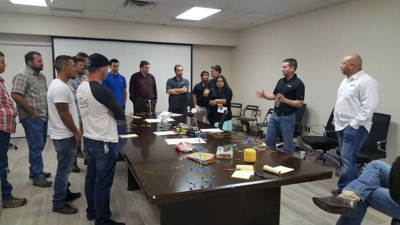
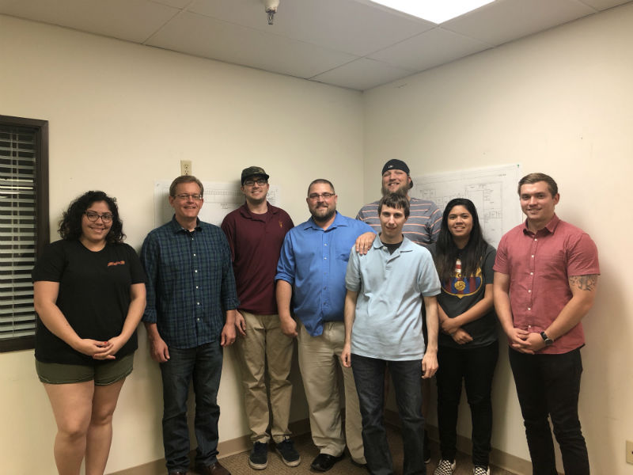
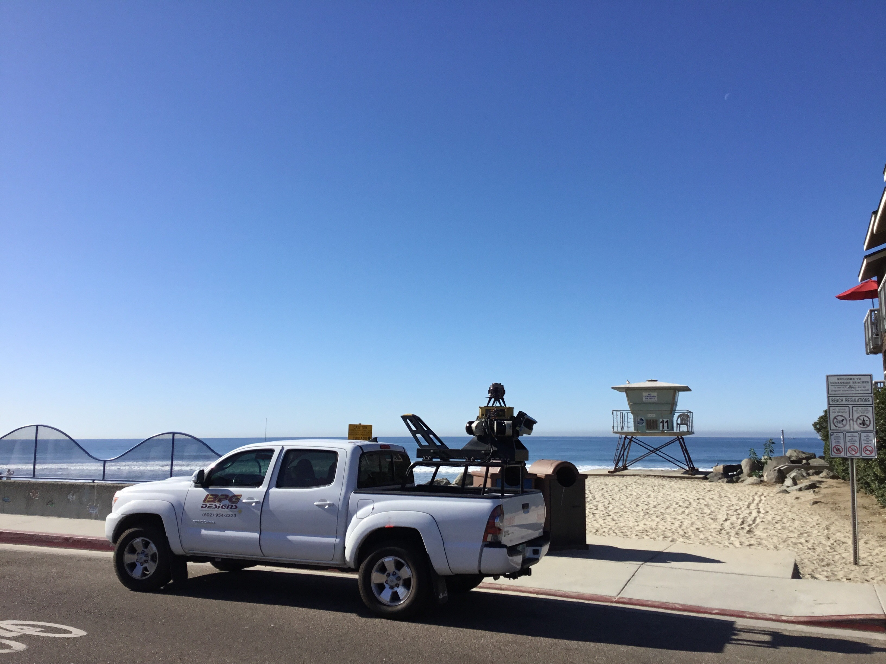

Verizon
- Designs high level design route for fiber network
-
Use extraction data from the mapping team to design
low level design fiber routes
- Fiber route to existing/future cell sites

Cox
-
Provide client with design drawings and municipal permits
required for new construction and revison work
- Process hundreds of jobs a week!

GeoDatabase
- Receive final design drawings from the design team
-
Manipulate date format, add spatial location of all physical assets
-
Import GeoDatabase into client's global Geographic Information
Systems(GIS)

Mapping/Extraction
-
Use field survey, mobile LiDAR and UAV tech to provide geospatially
accurate location of all assets being designed
- Provide location and asset for ADA studies
- Volumetric calculation for mineral resource clients